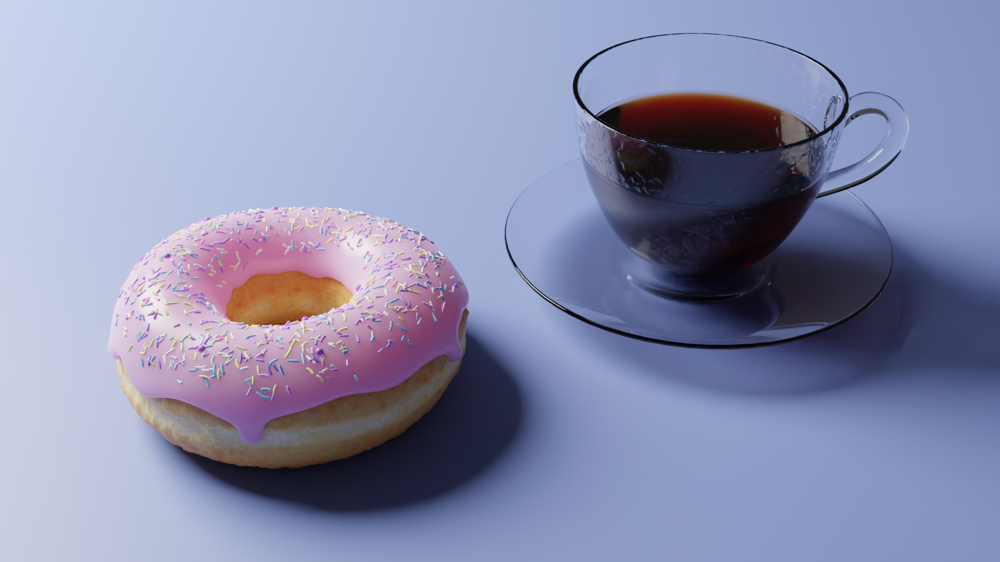

This page will explain my personal projects!
This website was created to let me gain experience in HTML, CSS, & Javascript. Using online resources, I was able to teach myself how these three languages work together. HTML builds the site, CSS styles it to make it look nicer, and Javascript is an easily integrated language that makes the site more interactive.
This will solve the determinant of any matrix. I made this to get experience in using code to solve real problems. It was first made shortly after learning how to solve the determinant of a matrix in a math course.
Download the original Java version!An interactive version is available on this site. This was to help myself learn javascript
Download the new javascript version!My Largest personal project. I wanted to make something where adding content is simple. To add to something to this game, you only need to add one line in a .txt file. This game supports a potentially endless map, a weight-based inventory system, combat, and magic spells. NPCs also have an aggression system, they use the items that they are equiped with, they can have RNG-based inventories that you can take from. In the future, I will look into re-creating this in javascript to make it interactive.
Download Adventure here!My first personal project. This was made after one java course, so I didn't know how versatile objects could be. Very rough around the edges, but it is important to see how far I have come.
Download the old Adventure here!Using online resources, I was able to learn the basics of Blender. Below is a render of what I have made.
